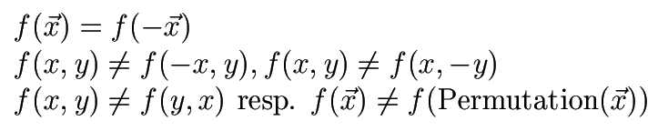
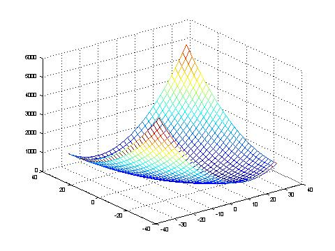

Schwefel's double sum is a quadratic minimization problem which difficulty increases by the dimension n in O(n²). It is used for analysis of correlating mutations.
It possesses specific symmetrical properties:

Its minimum is located at: f(x)=f([0, 0, ... , 0])=0

Hans Paul Schwefel. Evolution and optimum seeking. Sixth-Generation Computer Technology Series. John Wiley & Sons, INC., 1995.